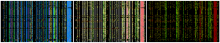
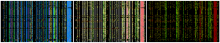
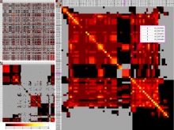
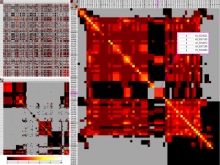

Visualizing Microbial Ecology Data for Public and Scientific Audiences
Sequencing technologies have become increasingly less expensive and produce vast amounts of data, especially in the field of microbial ecology. Proper visualization of these complex data is key to informative analysis and insight generation for both public and expert scientific audiences. We designed an experiment to determine which types of visualization techniques are most informative for microbial ecology data for these two different types of audiences. To perform this experiment on a large number of subjects in a systematic way, we created a modular system with easily substitutable visualization methods. We developed dynamic visualizations that parallel existing visualizations in the QIIME tool (state-of-the art tool for expert users) using the D3 (Data Driven Documents) Javascript library, and a visualization-testing framework to display data collected for the American Gut Project. In the experiment we will select visualization techniques for particular types of analysis from a set of visualizations appropriate for the selected data and ask lay and expert users to answer questions about the data. We will grade the answers to determine which visualizations best support users with the data analysis. We hypothesize that the scores will indicate that certain visualization techniques are more appropriate for certain types of data, and that certain visualizations may be found more informative for one audience over the other, in public and scientific audiences.
BioVis 2013 Information
 

 
